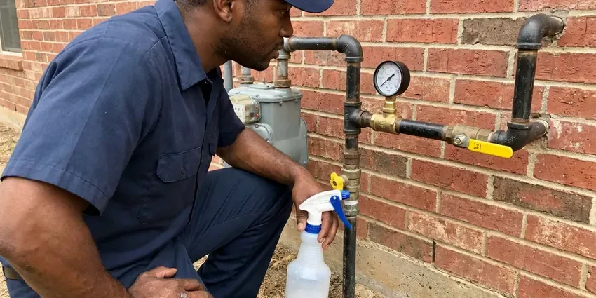

Water Softener Maintenance in Greenville, SC
Fleck, Clack, Autotrol or a big-box unit from the garage, KBN Plumbing works on most softener valves in Greenville, SC.
- Fleck and Clack Valve Repair
- Work Backed in Writing
- Licensed Technicians
- Same-Day Softener Visits

Book Water Softener Maintenance in Greenville, SC.
We clean the brine tank, clear the injector and reset regeneration in about an hour.
Softener Service for Greenville, SC Homes
KBN Plumbing has rebuilt a lot of Fleck 5600 and Clack WS1 valves, and most of them failed for the same reason. It was grit, nearly every time. Grit from the salt and the water supply chews up the seals and spacers. Water then slips past the resin bed and the house goes hard again, often for months with no warning.
Our expertise includes:
- Resin Cleaning and Replacement
- Resin rebedding plus iron and chlorine damage testing
- Control Head Repair

Additional Plumbing Maintenance Services in Greenville, SC
Our maintenance and specialty plumbing services in Greenville, SC protect your home year-round and extend the life of every system.




Gas Line Repair near Greenville

Customers
Why Choose KBN Plumbing for Water Softener Maintenance in Greenville, SC?
A yearly service is cheap insurance. It costs less than one tankless heater descaling, and we clean the brine side and test the water both before and after the work. You get the before and after numbers in writing, so you can see what changed.
- Longer Softener Life, A softener that gets yearly service often runs well past the 10-year mark.
- Less Salt, Correct settings use less salt and water every regeneration.
- Smarter Salt Use, We set the salt dose so you stop buying extra bags without losing softness.
Citywide Coverage
Softeners put in by another company are fine with us anywhere in Greenville. We do not need the original installer's paperwork. A model number or a photo of the valve head lets us load the matching seal kit, and most of those parts ride on the truck already.
Experienced Team
Each technician is background-checked before hiring and keeps training on new valve models and control boards as manufacturers release them. Valve makers like Clack and Fleck revise their designs every few years. The older 5600 mechanical timers still get serviced too.
Safety-First Approach
Control heads plug into a standard outlet through a low-voltage transformer, and water and electricity sit close together on these units. The outlet gets checked for moisture and the cord for pinches. An outdoor head needs a weatherproof cover.
Trusted Certified Greenville Plumbing Services Professionals
At KBN Plumbing, we take pride in licensed, certified plumbing services throughout Greenville, SC. Those papers on the wall mean something. Every repair, install and maintenance visit follows strict safety and quality rules, and the plumbers doing the work carry recognized industry credentials.
Call Us Now PHCC Plumbing Contractor Recognition
PHCC Plumbing Contractor Recognition Better Business Bureau (BBB) Accreditation
Better Business Bureau (BBB) Accreditation Angi Certified Pro
Angi Certified Pro ISO 9001 Quality Management Certification
ISO 9001 Quality Management CertificationWhat Our Water Softener Maintenance Covers in Greenville, SC
Resin Cleaning and Regeneration Tuning in Greenville, SC
Iron is the most common resin fouler we see. The beads turn rusty brown and stop grabbing hardness. We feed a resin cleaner through the brine well, run a regeneration and retest, and if the capacity comes back we shorten the time between regenerations so the iron does not build back up.

Hardness Testing at the Tap in Greenville
We test with a titration kit, counting drops until the sample changes color, because test strips are too rough for setting a valve. Raw water gets tested from an unsoftened hose bib or with the valve on bypass. Softened water comes from the kitchen tap.
Regeneration Programming and Hardness Testing in Greenville, SC
Plenty of softeners still run factory settings. The installer never changed them, or the household grew and nobody updated the valve. We enter your raw hardness and household size, then set a metered valve to regenerate by gallons used instead of every few days on a timer.
Control Valve and Timer Diagnostics in Greenville, SC
The control valve runs every stage of regeneration, from backwash through brine draw to the final refill. We advance it manually through each cycle and watch for a motor that stalls, a drive gear that skips, a piston that drags or a drain that never shuts off. Worn pistons turn up a lot.
Breaking Up Salt Bridges in Greenville
To check for a bridge, we push a broom handle straight down through the salt. A hard stop, then a drop, means a bridge. We break the crust, vacuum out the salt mush below it, then check the brine well, safety float, brine line and grid plate before refilling to about half full.
Softener Maintenance Plans and Pricing in Greenville, SC
The plan is one flat yearly fee. It covers the service visit and both hardness tests, and any parts we install during plan visits are billed at a lower rate. For most homes it pays for itself the first time it catches a stuck float.
Yearly Water Softener Tune-Ups in Greenville
A tune-up starts with two hardness readings and ends with a full manual regeneration that we watch from start to finish. In between, we check the salt level, the brine well and the float. Figure on an hour for a typical unit.

Softener Upkeep for Restaurants and Shops in Greenville
Ice machines, espresso machines, dish machines and boilers all scale up fast on hard water, and equipment warranties often require treated water. Each visit includes a hardness test, logged for your warranty file. Brine tank cleanouts come around more often on these systems.
Softener Service Near Me in Greenville, SC
Our plumbers work in the Greenville area every weekday, so a softener call usually gets on the schedule within a day or two. Same-day slots open up often. A leaking brine tank or a valve stuck in backwash goes to the front of the line.
Being local cuts the wait on a leaking softener from days to hours. A cracked brine tank or a control valve stuck in its drain cycle can put water across a garage floor overnight. The bypass handle cuts off its water supply.
KBN Plumbing at a Glance
- Fully licensed plumbing team covering Greenville, SC
- 24/7 emergency service with same-day scheduling
- Clear written estimates, no hidden fees
- 4.8-star rated by 596+ South Carolina customers
Greenville Map
Greenville Information
- Population
- 72,824
- Area codes
- 864/423/803
- Service area
- Greenville and communities within 40 miles
- Nearby
- Greer, Spartanburg, Rock Hill, Fort Mill
Most municipal water in South Carolina comes from rivers and reservoirs, so it tends to run soft and leaves less scale than in many other states. A softener in Greenville, SC should get looked at once a year to keep that scale off faucets and out of the water heater.
Talk to a Plumber
Reach out to KBN Plumbing for reliable plumbing work done by licensed pros in Greenville, SC.
Our Specialized Plumbing Services in Greenville, SC
At KBN Plumbing, we handle the full list of plumbing services across Greenville, SC. We go from leak detection all the way to full system installations, for homes and commercial buildings, and we do it quickly at a fair price. Take a look at our core services below:


How a Water Softener Maintenance Visit Works in Greenville, SC
Most softener visits in Greenville, SC follow these steps, from first test to last.
Call or Book Online
Call (864) 588-3813 or use the online form, and mention the brand of your softener if you have it. We set a time that fits your day.
On-Site Inspection
A licensed plumber arrives at your Greenville home and takes hardness readings on both sides of the softener before looking at the tanks and valve.
Cleaning and Adjustment
We clean the brine tank, break up any salt bridge and service the injector, then set regeneration to your test results.
Frequently Asked Questions About Water Softener Maintenance in Greenville
Standard visits typically cost $125 to $250. Rebuilding the control valve usually adds $100 to $250. Resin replacement is the big-ticket item at $300 to $700, and it still costs far less than a new softener.
Generally, servicing an existing softener does not require a permit. Replacing the whole system or changing the plumbing around it can, based on what the local building department requires, and we handle that paperwork when it applies.
Most municipal water in South Carolina comes from rivers and reservoirs, so it tends to run soft and leaves less scale than in many other states. Calcium and magnesium are what leave scale in pipes and water heaters, and a softener that quits regenerating lets them right back in. One visit a year catches it before the scale does damage.
About an hour for a unit in decent shape. A packed brine tank or a valve rebuild adds to it. Surprises do happen, like a cracked distributor tube that shows up as resin beads in the faucet aerators, which can mean a return trip with parts.
At least once a year. Twice a year makes sense for very hard water or a busy household. The resin and injector last longer when grit and sludge get cleared regularly, and the salt dose stays matched to what the house actually uses.
Yes, our maintenance work is guaranteed for a set period after the visit. If the same problem comes back inside that window, a plumber comes back out and fixes it without charging you for the trip or the labor. Parts carry the manufacturer's warranty on top of that.
It helps a lot. Soft water keeps scale off tank bottoms and out of tankless heat exchangers, which is where most efficiency loss comes from. The heater still needs its own yearly flush, but there is far less to flush out.
A few inches of water can be normal, depending on the design. A tank that keeps filling higher usually has a clogged injector, a stuck float, a bad refill flow control or a drain line restriction. We fix whichever one it is and reset the valve.
What Our Customers Say About Our Plumbing Experts

Karen W.
After our third pinhole leak in copper, we stopped patching. KBN Plumbing gave us a written plan room by room and repiped the house in PEX while we stayed in it. The crew covered our floors every morning and cleaned up every night.
Repiping · Aiken, SC
Monica A.
Our water bill nearly doubled in one month with no change in how we used water. The tech checked the meter, heard the leak under the hallway with his equipment, and opened a hole about a foot square. Fixed the same day.
Slab Leak Repair · Rock Hill, SCLaura S.
Our 40 gallon tank started leaking from the bottom after thirteen years. The tech hauled the old one out, set a new unit with a fresh expansion tank, and had hot water running in about four hours. He took the old tank with him too.
Water Heater Replacement · Greer, SCSofia M.
Two new toilets went in during one visit. The tech set them on new wax rings and swapped the old supply lines. He also noticed our bathroom faucet dripping and replaced the cartridge while he was there. No mess left behind.
Toilet Installation · Greenville, SCJessica T.
We were adding a gas range in a kitchen remodel and needed a new line run from the meter. The plumber pulled the permit, ran the pipe through the crawl space, and had it inspected and approved within the week.
Gas Line Repair · Spartanburg, SC
Lisa C.
Water was pouring out from under the washing machine on a holiday weekend. KBN Plumbing talked me through closing the valves over the phone and had a plumber at the house within ninety minutes. It was a burst fill hose.
Emergency Plumbing · Columbia, SC